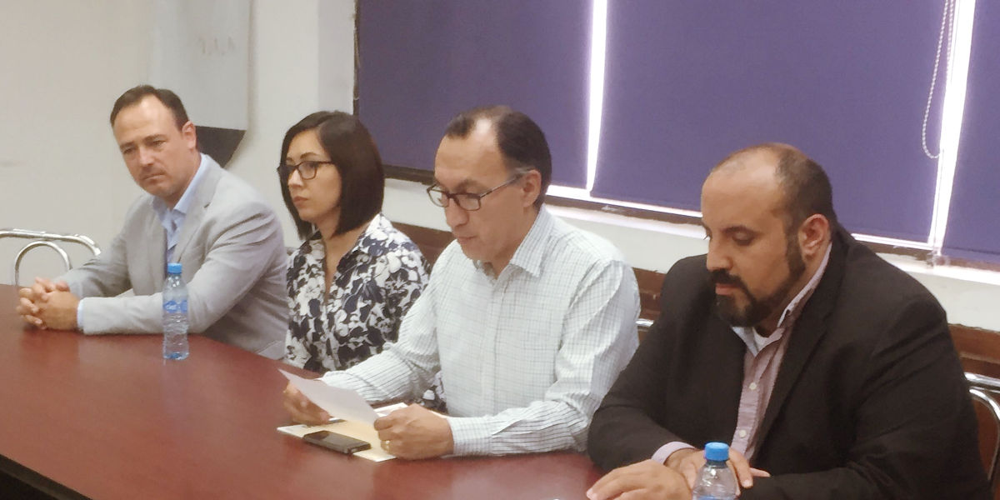

Acuerdan avance para ciudadanizar contralorías en Coahuila
SEA Coahuila - 07 junio 2018
Torreón, Coahuila de Zaragoza, jueves 7 de junio de 2018.
Representantes de diversas organizaciones de la sociedad civil que forman parte de la Alianza Anticorrupción y el Consejo de Participación Ciudadana (CPC) del Sistema Estatal Anticorrupción (SEA), firmaron una propuesta para establecer mecanismos para impulsar la integración ciudadana y la probidad técnica de los órganos internos de control de municipios y órganos constitucionales autónomos.
El proyecto impulsado por organizaciones de la sociedad civil y el CPC Coahuila, será un paso hacia adelante para que quienes son responsables de vigilar la correcta aplicación del presupuesto en ayuntamientos y órganos constitucionales autónomos, además de capacitar y sancionar a funcionarios y asegurar el cumplimiento de metas y objetivos, entre otras facultades, provegan de la ciudadanía y sean designados bajo mecanismos que convoquen públicamente a los interesados y los sometan a pruebas de capacidad y conocimientos para ocupar el cargo. Esto, permitirá sustituir los mecanismos actuales de designación directa, que son una práctica común en los cabildos y en el Congreso de Coahuila, lo que ahora no garantiza transparencia y legalidad en las funciones de los o las contraloras.

En el marco de esta propuesta, para elegir a sus contralores y en el caso de los órganos constitucionales autónomos, los municipios y el Congreso estatal, emitirán convocatorias públicas con requisitos determinados y existirá la posibilidad de que los interesados se registren libremente vía internet o de manera presencial. El CPC y miembros de la sociedad civil aplicarán exámenes, revisarán la currícula de los interesados, quienes serán sometidos a entrevistas para calificar las capacidades de todos ellos y poner a votación de los cabildos y el Congreso, una lista con los perfiles mejor calificados.
Este mecanismo podrá aplicarse en la integración de los órganos internos de control municipales a partir de los próximos ayuntamientos que serán elegidos el próximo 1 de julio. Del mismo modo, este esquema de selección podrá aplicarse a los órganos autónomos una vez que el Congreso Estatal emita las convocatorias similares.